Cloudspark is a mobile cloud storage app for file storage and collaboration. Users can upload photos, create and collaborate on documents and easily organize and share their files.
Overview
Role
UX Research, UX Design,
Information architecture,
Visual design and testing
Deliverables
High fidelity Invision prototype,
competitive analysis, user
personas, user stories, user flows, logo, brand style guide, UI design
Tools used
Figma, Invision,
Google Forms, Illustrator,
Draw.io, Lookback.io, UsabilityHub
Problem
User research revealed that cloud storage users struggle to keep their files organized, so we created and tested several prototypes to build a new cloud storage app with stronger organizational features.
The result was CloudSpark, a new cloud storage app with stronger organizational features where you can store files and collaborate with friends.
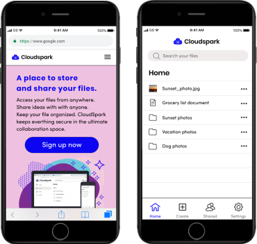
Research and Discovery
Research Key Insights
- The top files hosted on cloud storage sites are photos and documents
- The most important feature is uploading files from a mobile device
- People struggle to keep their files organized in cloud storage apps
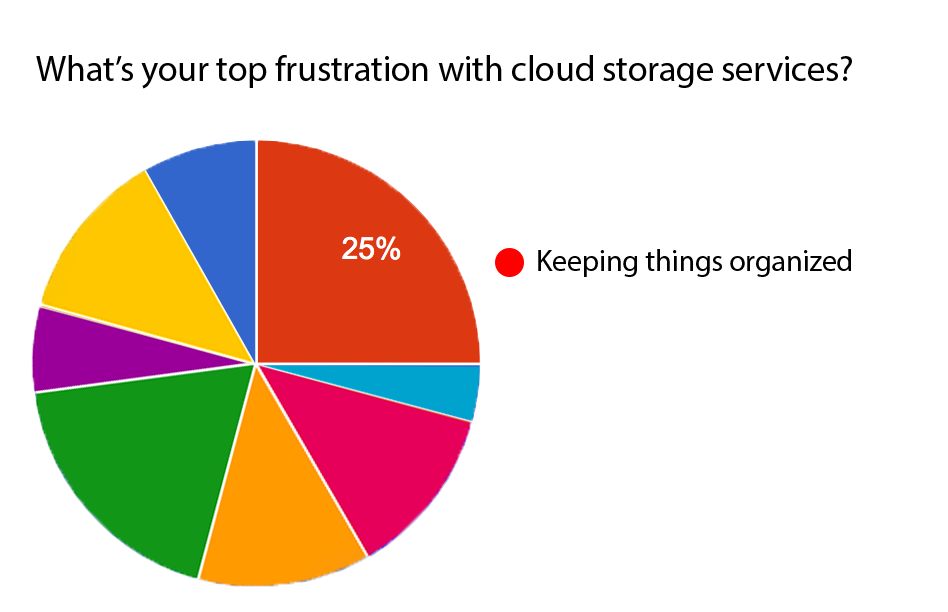
User Personas
Next, I developed two distinct personas based on trends in the research to build empathy with users:
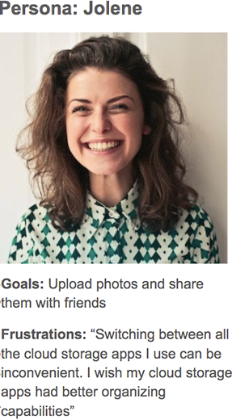
Jolene
Goals: Upload photos and share them with friends
Frustrations: “Switching between all the cloud storage apps I use can be inconvenient. I wish my cloud storage apps had better organizing capabilities”
Paul
Goals: Collaborate on and share files with colleagues
Frustrations: “I need better organization tools in my cloud storage apps. My own personal amount that has piled up over the years. It starts to feel overwhelming.”
Competitive Analysis
I found opportunities for a new cloud storage app to compete by studying competitors’ weaknesses
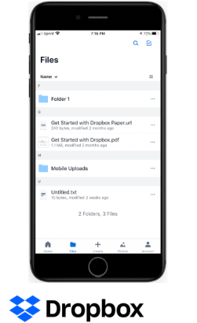
-Hard to keep things organized
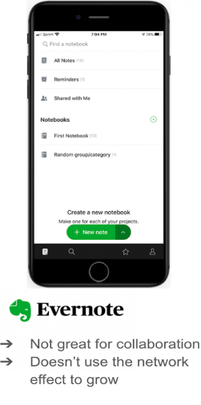
-Not great for collaboration
-Doesn’t use the network effect to grow
Information Architecture
User Flows
I mapped out the user stories with user flows to inform the design.
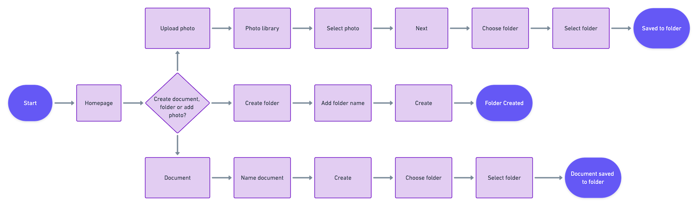 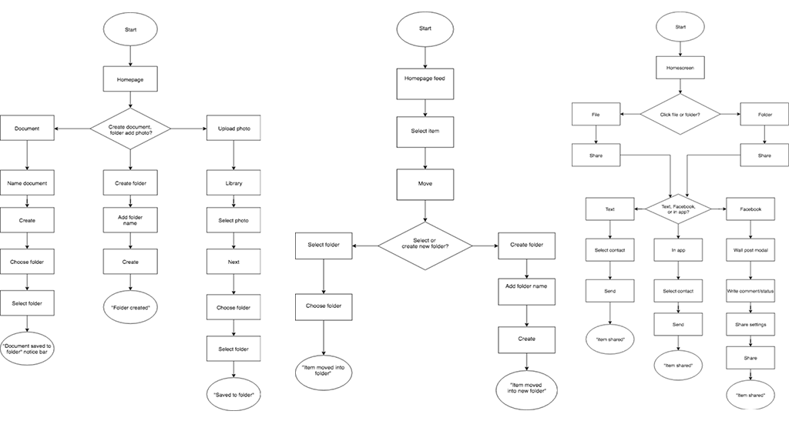
Sketching and Wireframing
I constructed low fidelity wireframes of the highest priority user flows in Figma and user tested them on several people remotely.
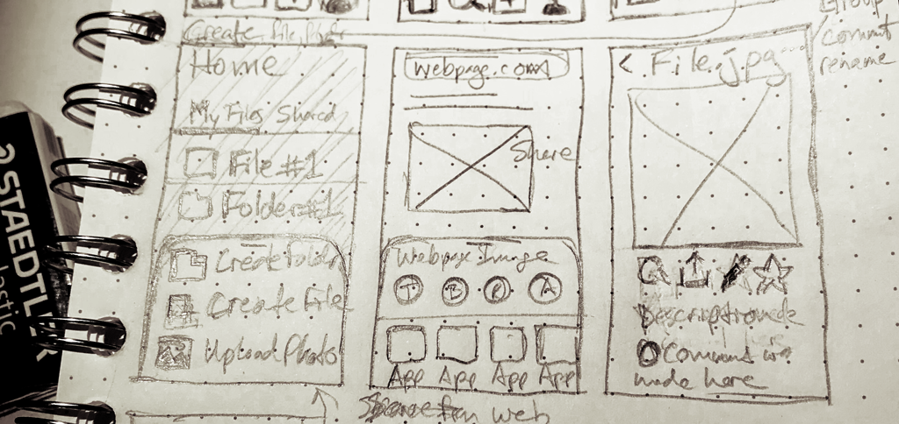
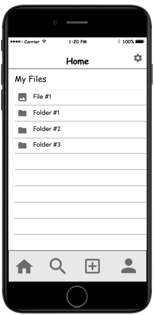
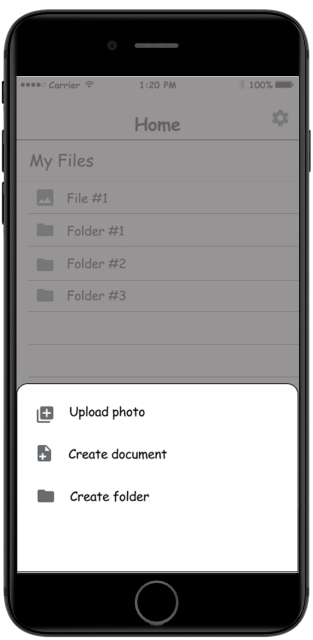
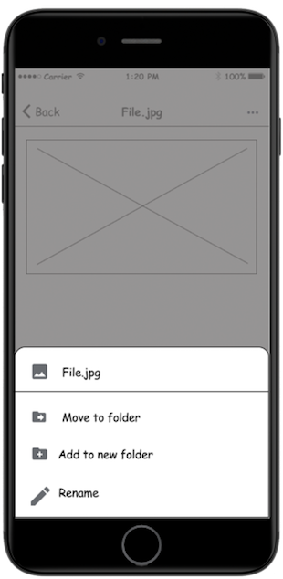
User Testing Results
Users were able to complete tasks successfully but gave great feedback. Based on the feedback from testing we made the following changes:
- Added search bar at top(users expected this from a cloud storage app)
- Labeled dashboard icons so users don’t have to guess its function
- Added overflow menu icons for files to reduce the number of clicks
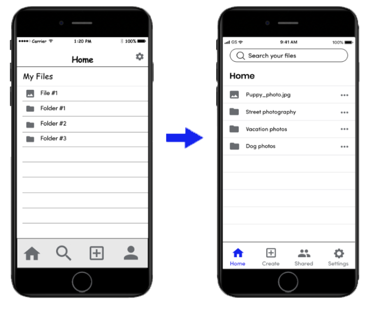
Visual Design
Branding
I chose brand characteristics like magical, fun and whimsical, which helped us choose a brand name of Cloudspark. I made dozens of sketches, combining the concepts of cloud and spark.
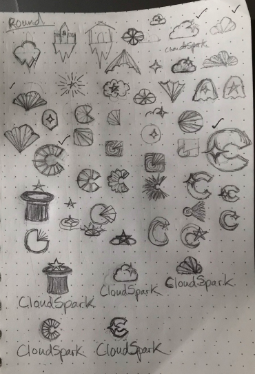
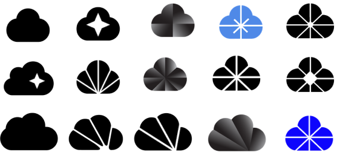
Logo Development
I refined the most promising concepts in Illustrator and landed on one refined mark, which we paired with the typefaces Poppins Semibold and Sofia Pro:
Style guide and brand assets
We used a mood board to develop a brand color palette and style guide:
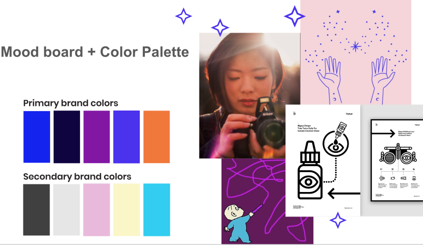
User testing high fidelity prototypes
- Created high fidelity prototype with new brand assets in Figma and Invision
- User tested the high fidelity prototype using Invision and Lookback.io
to record the sessions. - Users were able to complete tasks faster than the first round of user
testing but they made some suggestions which resulted in the following changes:
- Add logo to homepages dashboard
- Remove drop shadows from modals
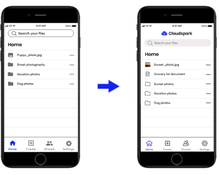
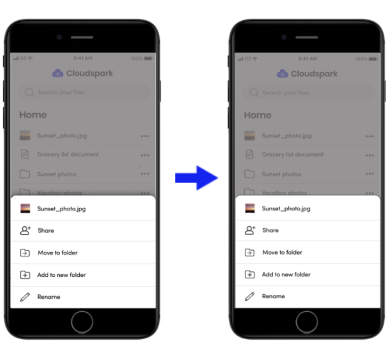
Preference testing
Conducted preference testing on high fidelity designs with Usability Hub and implemented users preferences in final InVision prototype
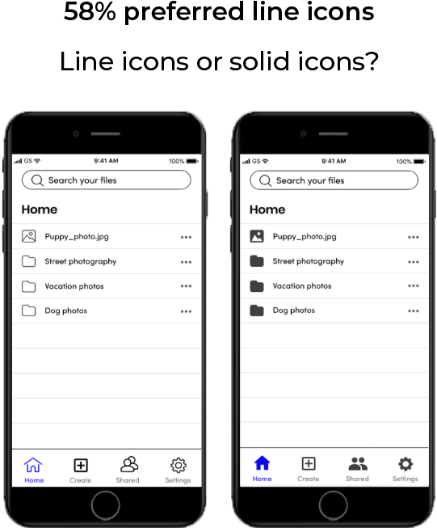
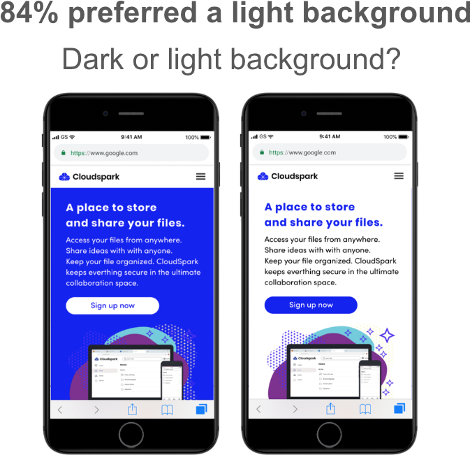
Final Prototype
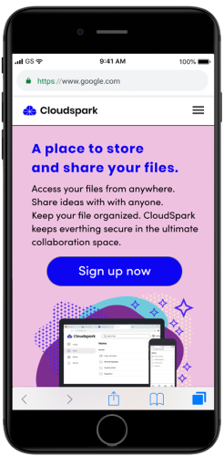
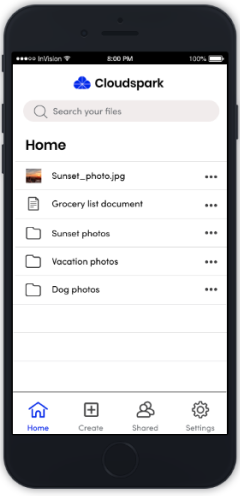
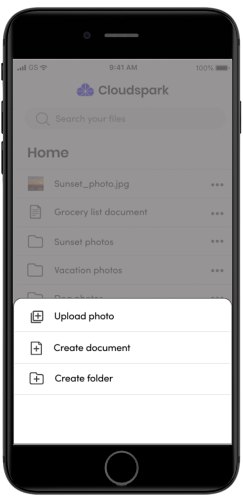
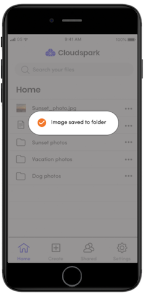
What I learned
- Had a lot of success with a list view design and slide up contextual menus
- Learned the importance of performing tasks in as few clicks as possible
- If time allowed, would have done additional research into more niche markets
- I initially had doubts there was any room for a new app in a competitive market, but when we discovered through our research that users were frustrated by the difficulty of keeping files organized, we realized there was an opportunity to create an app that had better organizational features.